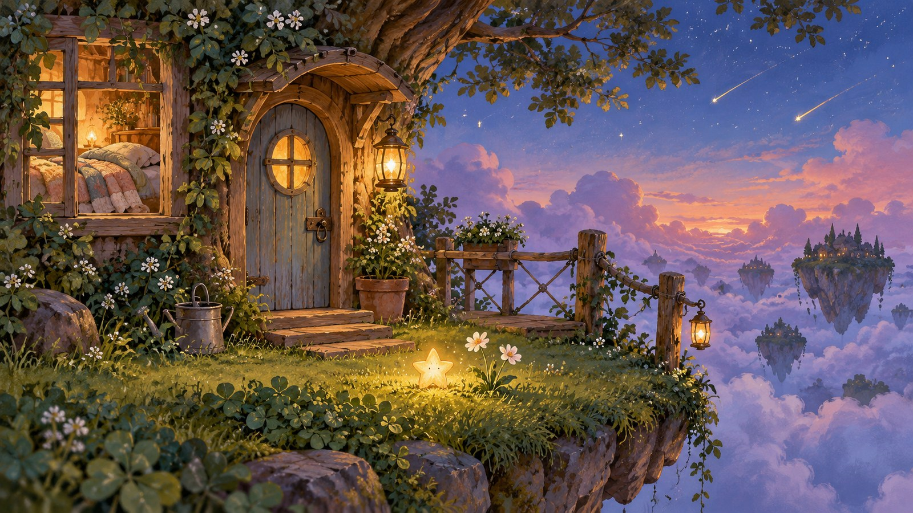
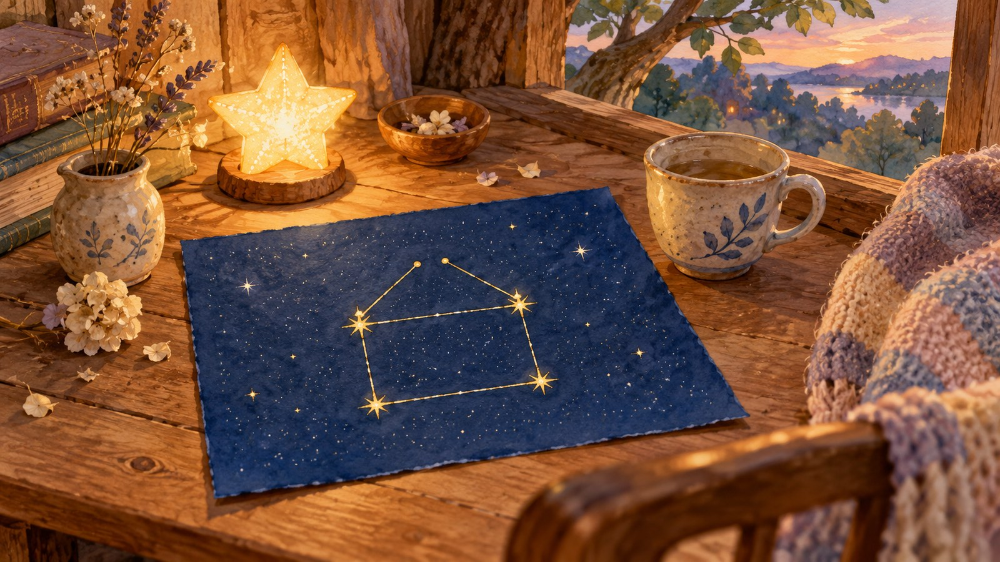
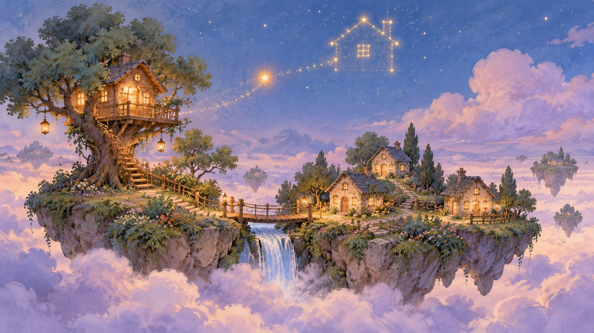
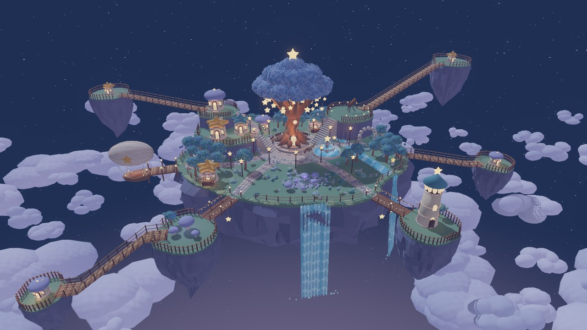
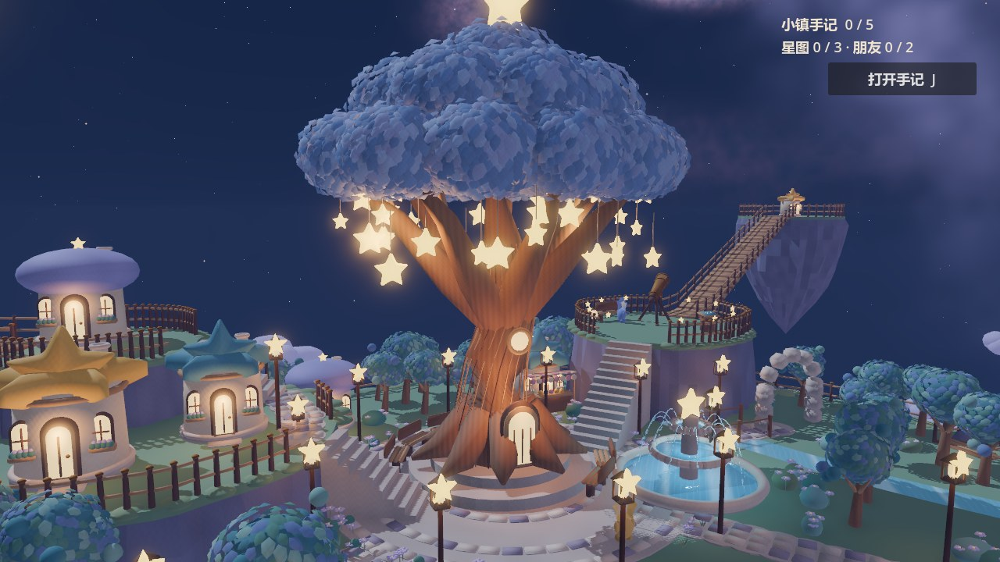
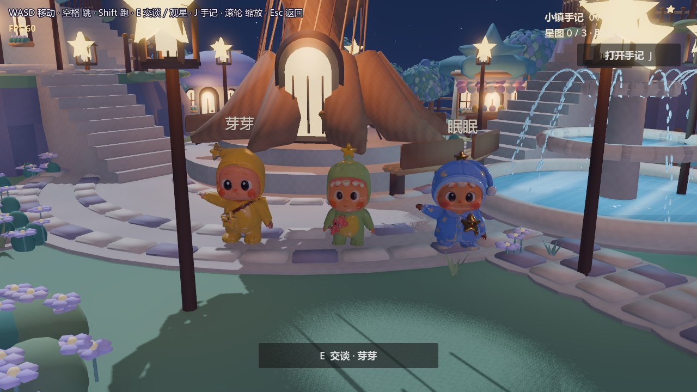

给初来小镇的你小光忘了家在哪里。
你愿意陪它找一找吗？
最初，它只是一点藏在草丛里的微光。花园里的芽芽说，岛上最懂星星的人住在高桥另一端。于是，一封信把你们带到更远的地方。
望远镜里的一条小船、孩子画下的一只铃、奶奶一直没有寄到的信，都在等你把它们连起来。小光为什么越帮助别人，就越亮一点？云海那边的灯塔，又在等谁？

第一章 · 掉进草丛的星星草丛里有一点光
树屋旁掉下来一颗小星星。陪它种花、浇水，等夜色落下来。
第二章 · 去找眠眠一封信，和一条高桥
芽芽为什么很久没有去看眠眠？把信送过桥，再试着从望远镜里找一条小船。

第三章 · 一盏一盏的灯谁家的灯还没有亮
面包师、修灯的邻居和数星星的孩子，都有自己的小烦恼。小光能帮上什么忙？
第四章 · 云海那边的灯塔云海那边有人在等
奶奶的信、沉睡的飞艇和远处的灯塔，慢慢指向同一段往事。

第五章 · 回家的光回家的方向
星图终于有了轮廓。关于告别，留到你亲自走到那里再说。
五章主线之外，还有三种天色的风铃、花园写生、水面上的星星、五座小岛的五句话和萤火虫的夜路。完成故事以后，也可以继续留在岛上走走。
星星岛的来处一棵大树，和愿意等你的邻居
岛屿浮在云海之上，木桥把远近的生活连起来。树屋是小镇的中心，星灯照着回家的路；花园、喷泉与观景椅，让旅行也有停下来的一刻。

开发早期实机，非当前版本截图星星岛：高桥连着远岛，树屋和喷泉围出小镇的中心。
开发早期实机，非当前版本截图星灯大树：居民的生活从这里展开，你和小光的故事也从树屋旁开始。
开发早期实机，非当前版本截图芽芽、你与眠眠：从花园到观星台，认识朋友，也替他们带去消息。